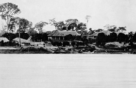

Lezione 17  La corsa alla spartizione del mondo
La corsa alla spartizione del mondo

In Cuore di tenebra, Joseph Conrad (1857-1924) fa rivivere nelle parole di un vecchio marinaio, Marlow, l’irresistibile vocazione per la vita di mare che gli fu propria, e, insieme, le emozioni, le aspettative, l’avventurismo che caratterizzarono l’età delle conquiste.
“E invero, per un uomo che ha, come si suol dire, “seguito le vie del mare” con reverenza e affezione, nulla è più facile che evocare il grande spirito del passato sugli ultimi tratti del Tamigi. […]
Aveva conosciuto le navi e gli uomini. Erano partiti da Deptford, da Greenwich, da Erith: gli avventurieri e i coloni; le navi della marina reale e quelle dei mercanti della borsa; capitani, ammiragli, loschi “contrabbandieri” del traffico d’Oriente, e i “generali” preposti alle flotte della Compagnia delle Indie. A caccia d’oro o in cerca di fama, tutti erano discesi al mare lungo quel corso d’acqua, con la spada, e spesso con la fiaccola, messaggeri della potenza che erompeva dal Paese, tedofori di una scintilla del fuoco sacro. Quale grandezza non aveva navigato sul riflusso di quel fiume verso il mistero di terre sconosciute! … Sogni di uomini, semi di repubbliche, germi di imperi.”
(Da Cuore di tenebra di Joseph Conrad)